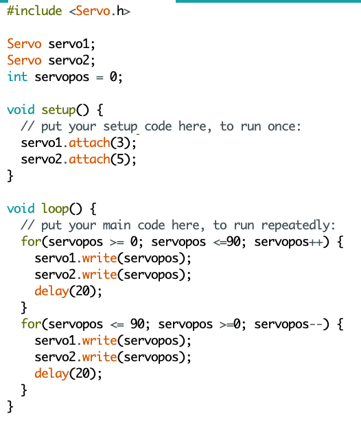
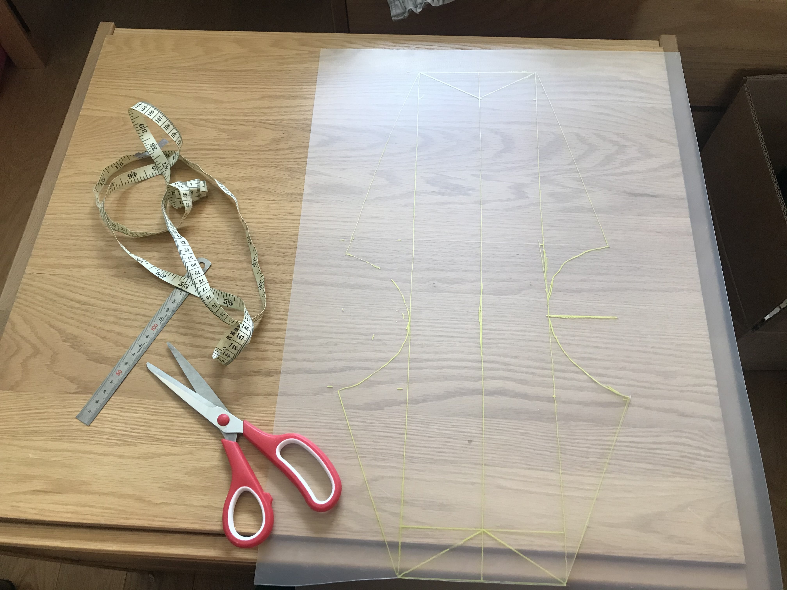
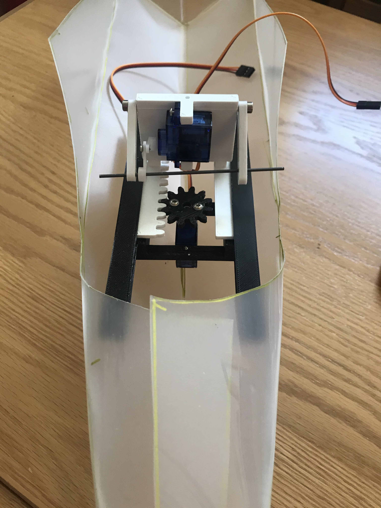
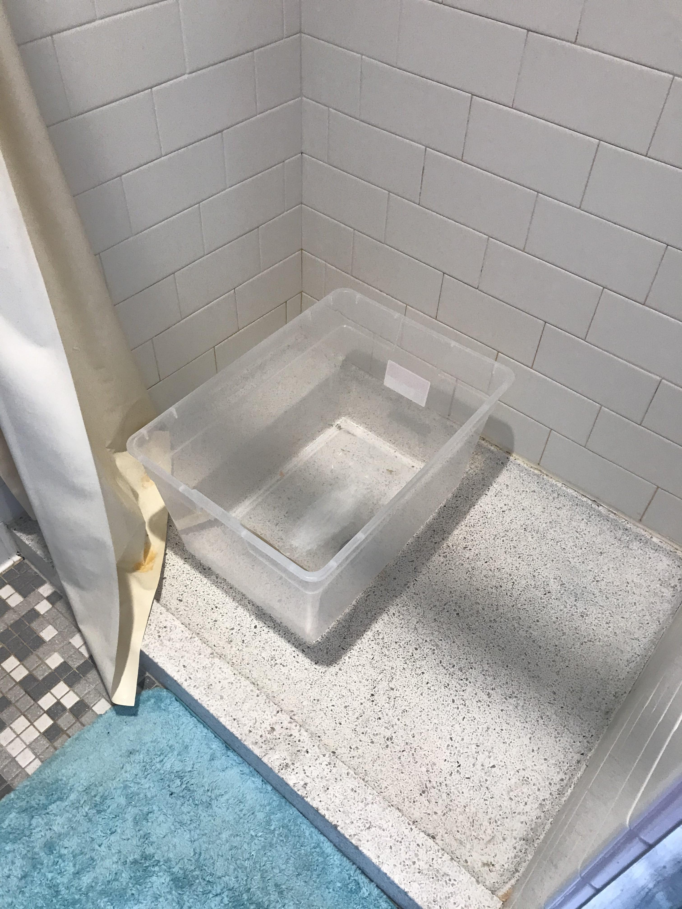
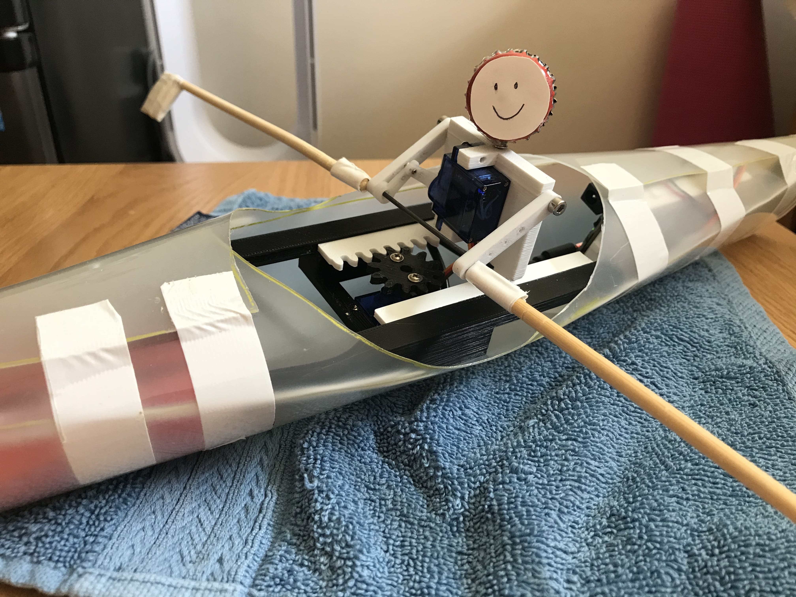

Week 13-15: Final Project!
Rower powered by 2 servo motors
Link to demo video on YouTube
Materials:
- Microcontroller
- Protoboard
- 2 Servo motors
- External power source
- 3D printed rack and pinion
- 3D printed torso and arms
- N3 screws
- Dowel for connecting arms
- Bottle caps for head
- Sheet plastic for boat
- Chopsticks and cardboard for oars
- Tape
- Container with water or natural body of water for testing
While at the beginning of the semester, I had thought of doing a music box, I changed my idea to improving upon my rower that I had made from cardboard in Week 3: Hand Tools and Fabrication / Mechanical Design because I really liked tinkering around with mechanisms.
Because I had just tried to mimic the motion during Week 3 using a very makeshift rotary to linear motion mechanism and a DC motor, I wanted to spend a bit more time fine tuning the motion.
I started off revisiting my old prototype and realized it would be best to have two separate motions for the arms and the body. (I had originally just been pulling the whole thing from the arms that were attached by a rod, resulting in a violent motion and occasionally the rower becoming unseated.) Because I knew the main focus of this project would be the mechanisms, I spent a lot of time on YouTube watching different mechanism videos and also thinking about what types of motion I wanted.
While I knew the exact motions I had wanted, it was difficult trying to figure out how to bring them to life. While I had wanted elbows and a diagonal motion as well as potentially circular motion around the handle of the oars, I quickly realized this would be really, really difficult with the knowledge I had.
I ended up going a minimalistic route and settling for a back and forth motion with the body, which would be attached to a rack and pinion, but only utilizing one "arm" of it since I just wanted it in one direction, and about a 90 degree rotation with the arms, allowing them to move up and down. Not quite the rowing motion I had pictured in my head, but it was doable.
Before heading to Fusion 360, I wanted to get a sense of how it would actually work in real life, so I made a very rough cardboard rack and pinion made out of scrap materials from our kit (the 3D printed wood parts and the timing belt to use a makeshift gear).
I got a lot of help from Nathan for the Fusion 360 part for the linear part with teeth of the rack and pinion as well as for the platform it would move within. We attached a body to the linear part, with teeth on only one side since I was only utilizing the mechanism in one direction. This would all be powered by a servo motor attached to the gear.

After talking more about how I wanted the arms to move with Nathan, we decided we could attach a second servo motor to the body and connect the servo to the arms, which I created using the slot function from Fusion 360 and tested using the joints function.

After picking up the parts Nathan had printed, I realized there were a few roadblocks before I could put everything together. The main problem stemmed from the fact that the holes in the servo arm wouldn't line up with the holes in the main arm because they were different lengths and thus the wholes did not travel in the same path. A smaller issue was that some of the holes were not big enough for the rod.
I tried to go about this a few ways. I first tried to see if it made a difference which holes the rod went through. Sadly, it didn't. Next, I tried to see if I could only put a rod through the servo arm and make it push the arms up by putting the rod just below the arms. This revealed a new problem: because the servo motor was attached on the rght side of the body, there was a balance problem.

After manually enlarging the holes on the servo arm and utilizing a double-servo-arm to allow for the difference in arc by the servo arm and the regular arm and making the rod go through unevenly (going through the higher hole on the left arm).
Once I got the arms moving, I moved onto figuring out how to control multiple servo motors. After working through a few YouTube tutorials, this wasn't much of an issue.
After hooking everything up and fine tuning the angle degree (I settled on 90 degrees for both, just going with the limited movement of the arm). 90 degrees ended up being just enough for the back and forth movement as well.
With the motions working the way I wanted them to, I moved onto constructing an actual boat. I found a cool boat design and ended up drawing it to scale (to fit the width and length of the 3D printed parts) on some thick sheet plastic Nathan gave me when I picked up my parts. The link to the design can be found here.
After cutting it out and assembling the first half, I stuck my prototype in to check that it did fit.
Next, I played around with adding oars to the rod the arms were connected to. I tried makeshift ones with some spoons and put everything inside the half taped boat to make sure everything would fit and that everything was still moving the way it was supposed to!
After verifying nothing had broke, I changed the oars to chopsticks with small square pieces of cardboard attached to them and taped them to the rod. I also added a head using two bottle caps!
I decided my prototype was more or less done, so I went out to find a bathtub in Winthrop. Unfortunately, the one hallway bathtub in Standish Hall didn't have a tub plug, so I couldn't use the tub to test. However, on my way back, I snooped around in the mail room and ended up borrowing a plastic container to fill water in!.
Before putting it in the water, I tested the prototype one last time
I wasn't feeling super confident about whether my boat would float or not, so I was super scared to let go once I put it in the water, but it ended up floating! Success!
